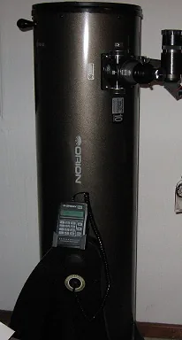

Celestron AstroMaster 130EQ
One of the most recommended first telescopes, the AstroMaster 130EQ pairs a 130 mm Newtonian reflector with a German equatorial mount. Once polar-aligned, the mount lets you track the Moon and planets with a single slow-motion knob — a gentle introduction to how professional telescopes follow the sky.
Learn more ↗